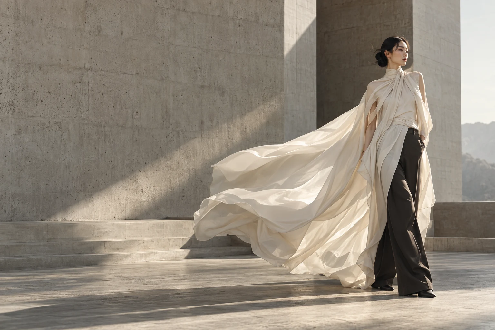
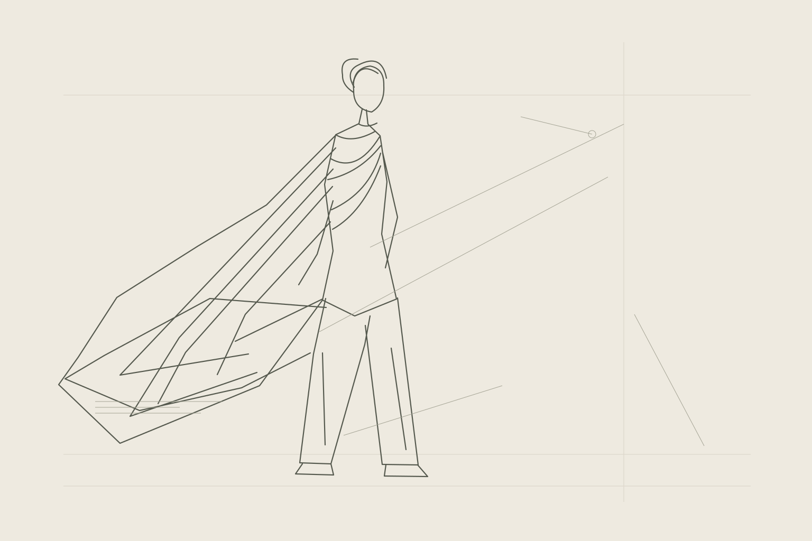

선에서 시작해, 장면이 되기까지.
슬라이더를 움직여 두 표현을 비교해보세요. 같은 아이디어를 설명하는 벡터 스케치와 AI 이미지이며, 스케치를 입력해 자동 변환한 결과는 아닙니다. 키보드 방향키로도 조절할 수 있습니다.
A POSSIBLE WORKFLOW / 제안하는 디자인 과정
아이디어의 윤곽
실루엣과 디테일을 드로잉으로 정리합니다. 형태, 소재, 착용 상황을 함께 생각합니다.
눈에 보이는 가능성
콘셉트를 이미지로 구체화하며 컬러와 소재의 인상을 비교합니다.
다음 단계를 위한 검토
선택한 방향을 실제 패턴과 샘플 개발로 연결하기 위해 비율과 제작 가능성을 검토합니다.